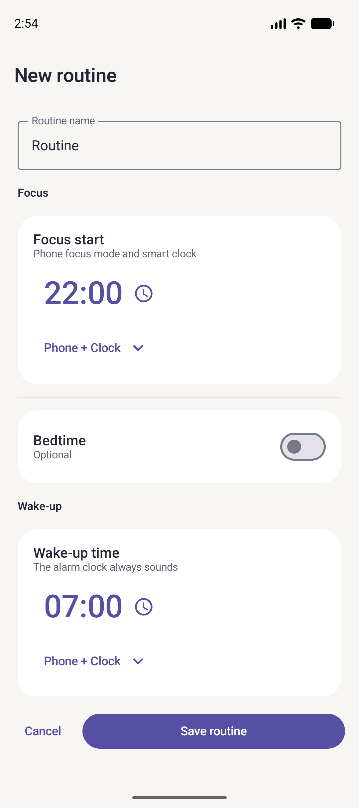

Set up a routine
Choose when your alarms repeat and which device should ring.

- Under Routines, tap + and give the routine a name.
- Set Focus for the start of your evening, Wake-up for the morning and Bedtime if you want a reminder to go to bed.
- Choose the days or repeat interval. Open the sound output settings and select Clock for events that should ring on the alarm clock. Focus also sounds on the phone.
- Under Sound & snooze, choose a ringtone and snooze durations. Save, connect the clock and sync.
- Check the next event under Today. To test the setup, schedule an event a few minutes ahead, then check the sound, Snooze and Stop.
After restarting the clock, reconnect the phone to send the time and routines again. Return to button testing.